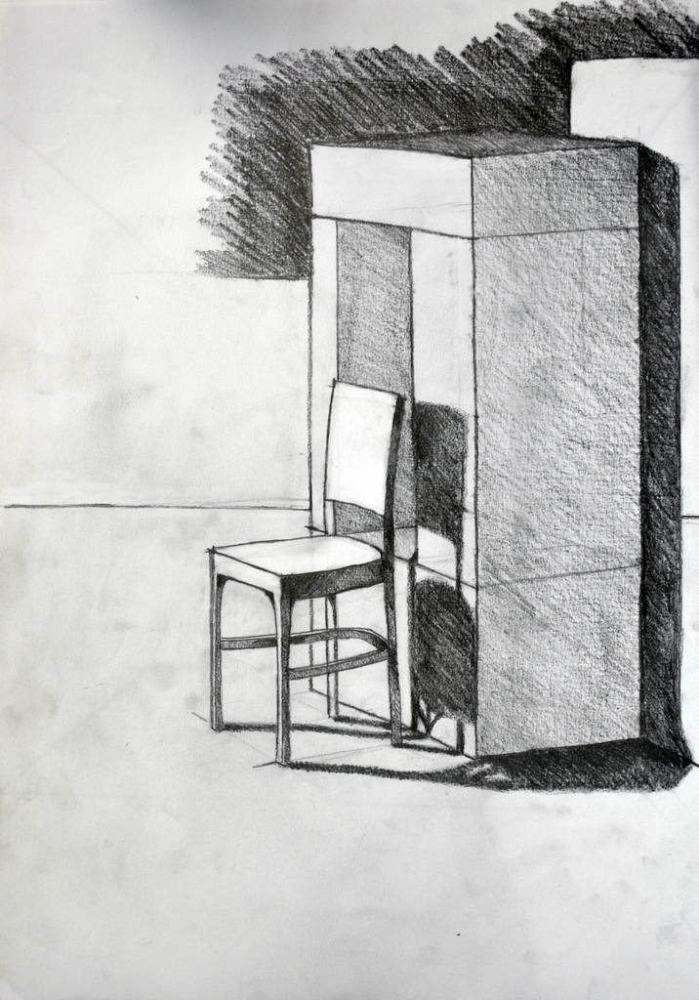
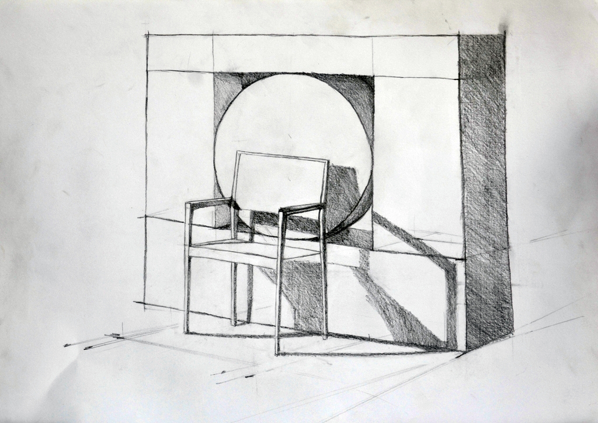

3.képcsoport
Az itt szereplő rajzaim fejlődésem következő szakaszát mutatják be, és már közelebb áll ahhoz, amit jelenleg is tanulok a terméktervező szakon.
Már nemcsak alapvető térbeli testeket ábrázoltunk, hanem megjelentek a bonyolultabb szerkezetű tárgyak is. a székek ábrázolása már részletezőbb, finomabb ábrázolást követel meg tőlem. Ezeken a képeken javult a vonalvezetésem és az árnyékolástechnikám is. Ezek még fekete-fehérben készült rajzok, de az árnyalatok már sokkal részletezőbbek, mint az első csoportban található képek esetében.
|
|
 |  |